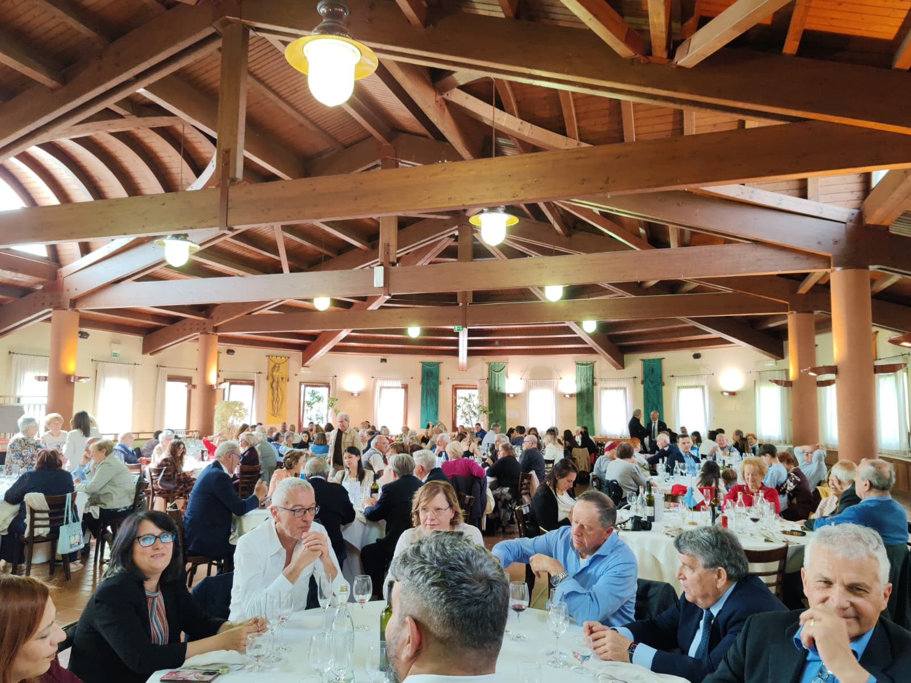

üçΩÔ∏è Pranzo Sociale 2026
Domenica 17 maggio 2026 presso Casa Zanni si Ë svolta la consueta assemblea generale dell'Associazione. Il nostro pi˘ profondo e sincero sentimento di gratitudine per l’altissimo onore accordatoci con la Loro presenza partecipazione delle Loro Eccellenze, unitamente alla presenza di autorevoli rappresentanti delle Istituzioni della Repubblica, dei Capitani di Castello, dei Consoli e dei rappresentanti delle comunit‡ sammarinesi presenti sul territorio italiano, ha conferito all’evento un significato di particolare prestigio e profonda vicinanza istituzionale.

